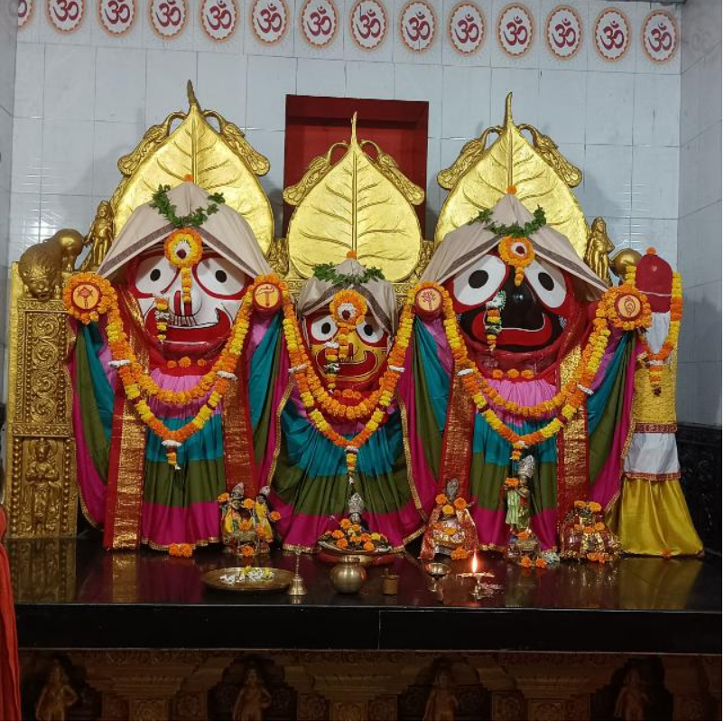

Santosh Baisakh
This person has a kind and thoughtful nature. They enjoy learning new things and are always curious about the world around them. Their determination helps them overcome challenges, and they often inspire others through their positive attitude. They value honesty, respect, and meaningful relationships, making them pleasant to be around.
My photo is right here..

My hobbies are
Playing cricket,badminton,football,watching movies,and enjoying new places
My Educational Details:
Completed Secondary Education (10th Grade)
Completed Higher Secondary Education (12th Grade)
Currently pursuing a Bachelor's degree
Interested in Computer Science and Web Development
Familiar with HTML, CSS, Java, and Database concepts
Participated in academic projects and technical workshops
Continuously learning new technologies and skills
My favourite website link is:
Favourite